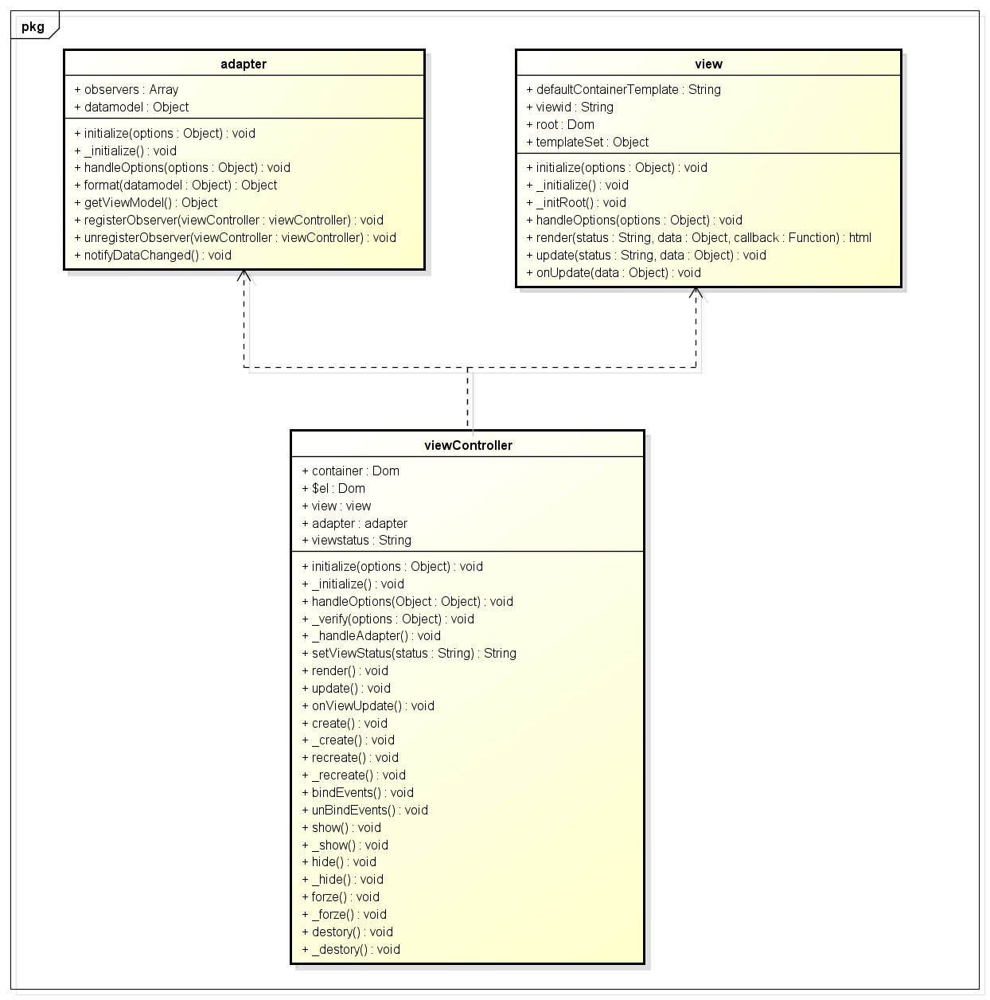

前言
最近校招要来了，很多大三的同学一定按捺不住心中的焦躁，其中有期待也有彷徨，或许更多的是些许担忧，最近在开始疯狂的复习了吧
这里小钗有几点建议给各位：
① 不要看得太重，关心则乱，太紧张反而表现不好
② 好的选择比坚持更重要
这点小钗便深有体会了，因为当年我是搞.net的，凭着这项技能想进bat简直就是妄想，于是当时我就非常机智的转了前端，另一个同学也非常机智的转了安卓
所以各位想进大公司，还需要提前关注各个公司最大的缺口是什么，找不准缺口基本无望进大公司的
③ 积累最重要/没有积累现在就专精
想进大公司除了运气，最重要的还是平时积累，若是大三之前没有5W行代码量的同学便需要专精一门，不要东搞西搞，最后什么都不会，那就完了
④ 不要扯设计模式
这里虽然有点偏激，但是就我的观察，我原来的leader、我身边的同事，我们公司的架构师，真的没有几个完全理解了设计模式，我们很多架构师甚至连个依赖图，时序图都搞不出来
所以各位面试的同学除非真的对设计模式有深入了解，或者代码量达到了10-20w行，除此之外不要在面试扯设计模式，肯定会中招的
PS：尼玛，这里差点忘了加之前，万一被leader看见了就完了！
最后，进得了大公司的同学一般之前大学时光没有怎么浪费，或者说天资本来就好，进不了的同学便先积累吧，搞不好哪天就中彩票不用工作了
好了，我们进入今天的正题，这是与blade框架有关的第三篇博客，第二篇是关于webapp seo难题的解决方案
由于该方案本身具有一定难度还在实现之中，所以这里就先出第三篇了......
PS：此文只是个人粗浅的认识，有误请指正
前端的发展
我原来常与leader讨论，javascript之前不适合做大规模应用的一个主要原因是其无法分模块，这个就带来了多人维护一个文件的难题
程序员往往都是2B，我们可能不会觉得自己的代码写得多好，但是一般会觉得别人的代码写得很烂！
于是你会看见一个有趣的现象便是两个有一定差距的程序员维护了一个js文件后，可能以后他们都不能愉快的玩耍了
让2个程序员维护一个文件都非常困难了，何况是多个？所以分模块、分文件是javascript或者说是前端一个极大的进步
他让前端合作变成了可能，由此才出现了几万甚至几十万代码量的前端应用，这里requireJS相关的模块库功不可没
这里我们先来回顾下之前我们是怎么写代码的
混杂编程
最初，我们的应用一般都不复杂，我们会这样写前端代码：
<body> <div> <span onclick="test()">测试</span> </div> <script type="text/javascript"> function test() { alert('do something'); } </script> </body>
慢慢的我们感觉好像不对，因为B同事好像也有个test方法，由于B同事比我们早来几年我们也不好喷他，于是只好寻求解决方案，于是出现了命名空间
<div> <span onclick="yexiaochai.test()">测试</span> </div> <script type="text/javascript"> var yexiaochai = { test: function () { alert('do something'); } }; </script>
这里解决了B同事冲刷我代码的问题后，突然B同事便离职了，B同事的代码交给了我们，于是我们非常看不惯其以B开头的命名空间！
此类情况也出现与了最初的ASP、JSP甚至现今的PHP，他们有一些共同的特点便是：
① web中的asp代码与javascript代码交替，代码杂乱
② 界面设计与程序设计混杂，维护升级困难
一个经典的例子便是著名论坛框架discuz的源码（他js其实控制的比较好），看过其源码的同学想必对其印象极其深刻
动则一个文件成千上万，内中html php代码混杂，整个维护阅读成本非常之高
这个时候由于社会发展，越来越多的复杂需求层出不穷，为了满足社会的需要，各大框架分分求变，于是有了一些变化
UI分离
这一次的变化我认为集中体现在UI分离这块，里面做的最成功的当然是ASP.net，javascript有与之对应的struts2
这一次的革新两大巨头不在将逻辑操作以及数据库操作写在与HTML有关的文件中了，而是写在与之对应的后台文件中，这里最优雅的是.net的codebehind方案
这次的变化倒不是说程序本身发生了什么变化，事实上程序本身并没有发生变化，以小钗熟悉的.net为例
我们一次新建页面会具有两个文件：
① index.apsx
② index.aspx.cs
<%@ Page Language="C#" AutoEventWireup="true" CodeFile="index.aspx.cs" Inherits="_00综合_11mvc_index" %>
public partial class _00综合_10doc_write_index : System.Web.UI.Page { protected void Page_Load(object sender, EventArgs e) { } }
值得关注的是两个文件的这些代码，这里的内部实现我们不去深究，但是小钗可以告诉你，最终的编译会将这两个文件和到一起，以上的代码映射便是他们合并的凭据
因为他们最终会和到一起，所以index.apsx与其index.apsx.cs才会具有方法数据通信的能力，跨页面就不行了
UI分离带来的第二个好处便是经典的.net三层架构以及经典的Java SSH框架，在UI分离之前，这类分离是不好实现的
于是.net与java的代码可以基于此一再细分，各个领域的程序员专注点与擅长点完全分开了，所以很多复杂的软件出现了
前端模块化
最初.net的做法也带来了很多质疑，因为懂行的都会知道，这样的代码事实上效率低了，理解差了；这里便和现今javascript的一些特征惊人的一致
我们的代码存在着这样一种递进的关系：
① 最简单的代码
<span onclick="test()">测试</span>
② 考虑方法重名问题后的代码
<span onclick="yexiaochai.test()">测试</span>
③ 考虑一个标签具有多个事件的实现
<body> <div> <span id="test">测试</span> </div> <script type="text/javascript"> var yexiaochai = { test: function () { alert('do something'); } }; document.getElementById('test').addEventListener('click', yexiaochai.test); </script> </body>
以上三种递进关系其实诠释了一客观因素：
业务需求变得复杂、业务复杂后处理业务的方法便多了，所以方法会重复，也是因为逻辑的复杂度导致一个标签可能具有多个事件
所以，现阶段前端代码复杂度的提升的根本原因便是原来的写法不满足需求了，我们需要这样写
以上三种递进关系只是一个开始，由于业务逻辑的膨胀，javascript代码爆炸性的膨胀起来了，于是我们做了一下事情：
① 将javascript文件放到一个文件里面
② 一个文件太多不好维护了，于是分成多个文件
③ 文件太多了，不好管理，于是开始适应模块化管理工具
以上是前端分模块的主要原因
前端MVC
前端做久了我们会发现，很多时候我们还是在操作html，无论是js事件操作，或者css操作，或者数据来了需要改变dom结构，总而言之我们总是在操作我们的UI
这个时候我们也会遇到一种现象是，这里需要一个信息提示框，那里也需要一个信息提示框，好像长得差不多
这样相似的需求积累，我们又不傻，当然会寻求统一的解决方案，于是便出现了UI组件，UI组件的出现是前端一大进步
这样前端便不只是写点小特效，小验证的码农了，摇身一变成为了高大上的交互设计师，而且还有很多妹子，工作环境好得不得了，想来的同学请给位私信，发简历，工资高，妹子多！！！
我们刚开始可能是这样做UI的：
function showAlert(msg) { //构架复杂dom结构，略 var el = $('<div class="msg">' + msg + '</div>') //绑定复杂的事件，略 el.click(function () { }); $('body').append(el); } showAlert('史上最强孙组长！');
这里面涉及到几个元素：
① 数据 => msg
② 界面 => el
③ 事件 => click
PS：此段虚构
逐渐的，我们发现这样写很不方便，原因是UED新来一个叫左盟主的抽风给我说什么语义化，要动我的dom结构！！！
尼玛，他当我傻啊！HTML有什么语义化可言嘛！我这边据理力争，因为他不懂嘛，他对不懂的事物便比较恐惧，所以我要把他说明白
但是史上最强、宇宙无敌孙组长带来了CSS天使小静mm给我语重心长的聊了一下小时代与后会无期的故事与渊源，最后还唱起了女儿情
于是我深深的理解了左盟主是正确的，前端确实应该考虑语义化，于是我决定修改我的DOM结构！！！
真正的修改下来，发现这里工作量不小：
首先是原来代码过程重来没有考虑过dom或者classname会变，这里一变的直接影响便是我那些可怜的事件绑定全部完蛋
于是我这里便考虑是不是应该将，表现与行为分离
这里的UI操作不应该影响我具体事件逻辑，而且UI样式的变化是家常便饭，就算UED不便，不同的业务场景总会要求一点不一样的东西，这里便引入了伟大的模板引擎
模板引擎
前端模板引擎的出现具有划时代的意义，他是实现表现与行为分离的基石，这里再配以zepto的事件机制，最后的结论就是左盟主的需求很简单
这里以blade的一个组件代码为例：
我们看到这里的alert组件的dom结构就是一个简单的html片段，于是我们要改某个dom结构便直接修改便是，不需要修改我们的js文件
当然这里的前提是这里的className映射不能丢，这个映射丢了，事件绑定一块仍然需要修改

到这里，我们是时候进入今天MVC的深入发掘了
理解MVC
正如.net引入Code Behind为了解决UI与业务分离一样，前端javascript也采用了MVC的方式分离UI与业务，前端MVC出现的主要原因其实便是：
职责分离！
其实小钗之前一直对MVC不太了解，不知道应该从哪个方案来了解MVC，以structs2为例，我好像就只看到几个配置向并没有看到控制器就完了
再以Backbone为例，其View的实现以及Model的实现基本处于分离状态，完全可以单独使用，Router一层看似扮演着控制器的角色但是我这里依旧觉得他仅仅是路由
再拿小钗最近写的Blade框架的app模块，他倒是有点像全局控制器了，控制着各个View的创建、销毁、通信，但是这里的Model好像由不在了
PS：传统的MVC的控制器是负责转发请求处理请求，生成View的，这点可以参考Blade的app
所以要想理解MVC还真不是一件容易的事情，当有人问起什么是MVC时往往我们都是一图打发：

事实上这个模型，在前端来说很少出现，他经常不上缺了一个Controller就是缺了一个Model，而每次问起级别较高的同事也只是将上图简单描述一下即只
好像MVC变成了一个玄之又玄的东西，处处透露着只可意会不可言传的神秘
PS：所以面试的同学小心了，一般问到什么设计模式或者MVC要么这个面试官很牛，要么狠喜欢装B，两者对你都不利
所谓MVC便是：
① View就只处理View的事情，其它神马都不要管
② 数据由Model处理，并且为View提供渲染需要的数据
③ 由于后端可能抽风可能将name变成Name坑前端所以会衍生出一套viewModel的东西作为Model与View的映射
④ 业务代码集中与viewController，提供事件让用户与View交互，入口点为View
所以一般逻辑是，Controller加载，初始化状态Model获得数据生成ViewModel，View生成，用户操作View触发事件由ViewController处理引起数据更新，然后Model通知view做更新
这里我认为实现最为优雅的是我与原leader的一个开源项目：
https://github.com/leewind/dalmatians

我觉得这个代码便很好的说明了MVC这个思想，各个模块只是关心了自己的职责，举个例子来说：


<!doctype html> <html lang="en"> <head> <meta charset="UTF-8"> <title>ToDoList</title> <meta name="viewport" content="width=device-width, initial-scale=1.0"> <link rel="stylesheet" type="text/css" href="http://designmodo.github.io/Flat-UI/bootstrap/css/bootstrap.css"> <link rel="stylesheet" type="text/css" href="http://designmodo.github.io/Flat-UI/css/flat-ui.css"> <link href="../style/main.css" rel="stylesheet" type="text/css" /> <style type="text/css"> .cui-alert { width: auto; position: static; } .txt { border: #cfcfcf 1px solid; margin: 10px 0; width: 80%; } ul, li { padding: 0; margin: 0; } .cui_calendar, .cui_week { list-style: none; } .cui_calendar li, .cui_week li { float: left; width: 14%; overflow: hidden; padding: 4px 0; text-align: center; } </style> </head> <body> <article id="container"> </article> <script type="text/underscore-template" id="template-ajax-init"> <div class="cui-alert" > <div class="cui-pop-box"> <div class="cui-hd"> <%=title%> </div> <div class="cui-bd"> <div class="cui-error-tips"> </div> <div class="cui-roller-btns" style="padding: 4px; "><input type="text" placeholder="设置最低价 {day: '', price: ''}" style="margin: 2px; width: 100%; " id="ajax_data" class="txt" value="{day: , price: }"></div> <div class="cui-roller-btns"> <div class="cui-flexbd cui-btns-sure"><%=confirm%></div> </div> </div> </div> </div> </script> <script type="text/underscore-template" id="template-ajax-suc"> <ul> <li>最低价：本月<%=ajaxData.day %>号，价格：<%=ajaxData.price %> 元</li> </ul> </script> <script type="text/underscore-template" id="template-ajax-loading"> <span>loading....</span> </script> <script src="../../vendor/underscore-min.js" type="text/javascript"></script> <script src="../../vendor/zepto.min.js" type="text/javascript"></script> <script src="../../src/underscore-extend.js" type="text/javascript"></script> <script src="../../src/util.js" type="text/javascript"></script> <script src="../../src/mvc.js" type="text/javascript"></script> <script type="text/javascript"> //模拟Ajax请求 function getAjaxData(callback, data) { setTimeout(function () { if (!data) { data = {day: 3, price: 20}; } callback(data); }, 1000); } var AjaxView = _.inherit(Dalmatian.View, { _initialize: function ($super) { //设置默认属性 $super(); this.templateSet = { init: $('#template-ajax-init').html(), loading: $('#template-ajax-loading').html(), ajaxSuc: $('#template-ajax-suc').html() }; } }); var AjaxAdapter = _.inherit(Dalmatian.Adapter, { _initialize: function ($super) { $super(); this.datamodel = { title: '标题', confirm: '刷新数据' }; this.datamodel.ajaxData = {}; }, format: function (datamodel) { //处理datamodel生成viewModel的逻辑 return datamodel; }, ajaxLoading: function () { this.notifyDataChanged(); }, ajaxSuc: function (data) { this.datamodel.ajaxData = data; this.notifyDataChanged(); } }); var AjaxViewController = _.inherit(Dalmatian.ViewController, { _initialize: function ($super) { $super(); //设置基本的属性 this.view = new AjaxView(); this.adapter = new AjaxAdapter(); this.viewstatus = 'init'; this.container = '#container'; }, //处理datamodel变化引起的dom改变 render: function (data) { //这里用户明确知道自己有没有viewdata var viewdata = this.adapter.getViewModel(); var wrapperSet = { loading: '.cui-error-tips', ajaxSuc: '.cui-error-tips' }; //view具有唯一包裹器 var root = this.view.root; var selector = wrapperSet[this.viewstatus]; if (selector) { root = root.find(selector); } this.view.render(this.viewstatus, this.adapter && this.adapter.getViewModel()); root.html(this.view.html); }, //显示后Ajax请求数据 onViewAfterShow: function () { this._handleAjax(); }, _handleAjax: function (data) { this.setViewStatus('loading'); this.adapter.ajaxLoading(); getAjaxData($.proxy(function (data) { this.setViewStatus('ajaxSuc'); this.adapter.ajaxSuc(data); }, this), data); }, events: { 'click .cui-btns-sure': function () { var data = this.$el.find('#ajax_data').val(); data = eval('(' + data + ')'); this._handleAjax(data); } } }); var a = new AjaxViewController(); a.show(); </script> </body> </html> 完成HTML
"use strict"; // ------------------华丽的分割线--------------------- // // @description 正式的声明Dalmatian框架的命名空间 var Dalmatian = Dalmatian || {}; // @description 定义默认的template方法来自于underscore Dalmatian.template = _.template; Dalmatian.View = _.inherit({ // @description 构造函数入口 initialize: function (options) { this._initialize(); this.handleOptions(options); this._initRoot(); }, _initRoot: function () { //根据html生成的dom包装对象 //有一种场景是用户的view本身就是一个只有一个包裹器的结构，他不想要多余的包裹器 this.root = $(this.defaultContainerTemplate); this.root.attr('id', this.viewid); }, // @description 设置默认属性 _initialize: function () { var DEFAULT_CONTAINER_TEMPLATE = '<section class="view" id="<%=viewid%>"><%=html%></section>'; // @description view状态机 // this.statusSet = {}; this.defaultContainerTemplate = DEFAULT_CONTAINER_TEMPLATE; // @override // @description template集合，根据status做template的map // @example // { 0: '<ul><%_.each(list, function(item){%><li><%=item.name%></li><%});%></ul>' } // this.templateSet = {}; this.viewid = _.uniqueId('dalmatian-view-'); }, // @description 操作构造函数传入操作 handleOptions: function (options) { // @description 从形参中获取key和value绑定在this上 if (_.isObject(options)) _.extend(this, options); }, // @description 通过模板和数据渲染具体的View // @param status {enum} View的状态参数 // @param data {object} 匹配View的数据格式的具体数据 // @param callback {functiion} 执行完成之后的回调 render: function (status, data, callback) { var templateSelected = this.templateSet[status]; if (templateSelected) { // @description 渲染view var templateFn = Dalmatian.template(templateSelected); this.html = templateFn(data); //这里减少一次js编译 // this.root.html(''); // this.root.append(this.html); this.currentStatus = status; _.callmethod(callback, this); return this.html; } }, // @override // @description 可以被复写，当status和data分别发生变化时候 // @param status {enum} view的状态值 // @param data {object} viewmodel的数据 update: function (status, data) { if (!this.currentStatus || this.currentStatus !== status) { return this.render(status, data); } // @override // @description 可复写部分，当数据发生变化但是状态没有发生变化时，页面仅仅变化的可以是局部显示 // 可以通过获取this.html进行修改 _.callmethod(this.onUpdate, this, data); } }); Dalmatian.Adapter = _.inherit({ // @description 构造函数入口 initialize: function (options) { this._initialize(); this.handleOptions(options); }, // @description 设置默认属性 _initialize: function () { this.observers = []; // this.viewmodel = {}; this.datamodel = {}; }, // @description 操作构造函数传入操作 handleOptions: function (options) { // @description 从形参中获取key和value绑定在this上 if (_.isObject(options)) _.extend(this, options); }, // @override // @description 设置 format: function (datamodel) { return datamodel; }, getViewModel: function () { return this.format(this.datamodel); }, registerObserver: function (viewcontroller) { // @description 检查队列中如果没有viewcontroller，从队列尾部推入 if (!_.contains(this.observers, viewcontroller)) { this.observers.push(viewcontroller); } }, unregisterObserver: function (viewcontroller) { // @description 从observers的队列中剔除viewcontroller this.observers = _.without(this.observers, viewcontroller); }, //统一设置所有观察者的状态，因为对应观察者也许根本不具备相关状态，所以这里需要处理 // setStatus: function (status) { // _.each(this.observers, function (viewcontroller) { // if (_.isObject(viewcontroller)) // viewcontroller.setViewStatus(status); // }); // }, notifyDataChanged: function () { // @description 通知所有注册的观察者被观察者的数据发生变化 var data = this.getViewModel(); _.each(this.observers, function (viewcontroller) { if (_.isObject(viewcontroller)) _.callmethod(viewcontroller.update, viewcontroller, [data]); }); } }); Dalmatian.ViewController = _.inherit({ _initialize: function () { //用户设置的容器选择器，或者dom结构 this.container; //根元素 this.$el; //一定会出现 this.view; //可能会出现 this.adapter; //初始化的时候便需要设置view的状态，否则会渲染失败，这里给一个默认值 this.viewstatus = 'init'; }, // @description 构造函数入口 initialize: function (options) { this._initialize(); this.handleOptions(options); this._handleAdapter(); this.create(); }, //处理dataAdpter中的datamodel，为其注入view的默认容器数据 _handleAdapter: function () { //不存在就不予理睬 if (!this.adapter) return; this.adapter.registerObserver(this); }, // @description 操作构造函数传入操作 handleOptions: function (options) { if (!options) return; this._verify(options); // @description 从形参中获取key和value绑定在this上 if (_.isObject(options)) _.extend(this, options); }, setViewStatus: function (status) { this.viewstatus = status; }, // @description 验证参数 _verify: function (options) { //这个underscore方法新框架在报错 // if (!_.property('view')(options) && (!this.view)) throw Error('view必须在实例化的时候传入ViewController'); if (options.view && (!this.view)) throw Error('view必须在实例化的时候传入ViewController'); }, // @description 当数据发生变化时调用onViewUpdate，如果onViewUpdate方法不存在的话，直接调用render方法重绘 update: function (data) { // _.callmethod(this.hide, this); if (this.onViewUpdate) { _.callmethod(this.onViewUpdate, this, [data]); return; } this.render(); // _.callmethod(this.show, this); }, /** * @override */ render: function () { // @notation 这个方法需要被复写 this.view.render(this.viewstatus, this.adapter && this.adapter.getViewModel()); this.view.root.html(this.view.html); }, _create: function () { this.render(); //render 结束后构建好根元素dom结构 this.view.root.html(this.view.html); this.$el = this.view.root; }, create: function () { //l_wang这块不是很明白 //是否检查映射关系，不存在则recreate，但是在这里dom结构未必在document上 // if (!$('#' + this.view.viewid)[0]) { // return _.callmethod(this.recreate, this); // } // @notation 在create方法调用前后设置onViewBeforeCreate和onViewAfterCreate两个回调 _.wrapmethod(this._create, 'onViewBeforeCreate', 'onViewAfterCreate', this); }, /** * @description 如果进入create判断是否需要update一下页面，sync view和viewcontroller的数据 */ _recreate: function () { this.update(); }, recreate: function () { _.wrapmethod(this._recreate, 'onViewBeforeRecreate', 'onViewAfterRecreate', this); }, //事件注册点 bindEvents: function (events) { if (!(events || (events = _.result(this, 'events')))) return this; this.unBindEvents(); // @description 解析event参数的正则 var delegateEventSplitter = /^(\S+)\s*(.*)$/; var key, method, match, eventName, selector; //注意，此处做简单的字符串数据解析即可，不做实际业务 for (key in events) { method = events[key]; if (!_.isFunction(method)) method = this[events[key]]; if (!method) continue; match = key.match(delegateEventSplitter); eventName = match[1], selector = match[2]; method = _.bind(method, this); eventName += '.delegateEvents' + this.view.viewid; if (selector === '') { this.$el.on(eventName, method); } else { this.$el.on(eventName, selector, method); } } return this; }, //取消所有事件 unBindEvents: function () { this.$el.off('.delegateEvents' + this.view.viewid); return this; }, _show: function () { this.bindEvents(); $(this.container).append(this.$el); this.$el.show(); }, show: function () { _.wrapmethod(this._show, 'onViewBeforeShow', 'onViewAfterShow', this); }, _hide: function () { this.forze(); this.$el.hide(); }, hide: function () { _.wrapmethod(this._hide, 'onViewBeforeHide', 'onViewAfterHide', this); }, _forze: function () { this.unBindEvents(); }, forze: function () { _.wrapmethod(this._forze, 'onViewBeforeForzen', 'onViewAfterForzen', this); }, _destory: function () { this.unBindEvents(); this.$el.remove(); // delete this; }, destory: function () { _.wrapmethod(this._destory, 'onViewBeforeDestory', 'onViewAfterDestory', this); } }); 完整MVC想法
<script type="text/underscore-template" id="template-ajax-init"> <div class="cui-alert" > <div class="cui-pop-box"> <div class="cui-hd"> <%=title%> </div> <div class="cui-bd"> <div class="cui-error-tips"> </div> <div class="cui-roller-btns" style="padding: 4px; "><input type="text" placeholder="设置最低价 {day: '', price: ''}" style="margin: 2px; width: 100%; " id="ajax_data" class="txt" value="{day: , price: }"></div> <div class="cui-roller-btns"> <div class="cui-flexbd cui-btns-sure"><%=confirm%></div> </div> </div> </div> </div> </script> <script type="text/underscore-template" id="template-ajax-suc"> <ul> <li>最低价：本月<%=ajaxData.day %>号，价格：<%=ajaxData.price %> 元</li> </ul> </script> <script type="text/underscore-template" id="template-ajax-loading"> <span>loading....</span> </script>
//模拟Ajax请求 function getAjaxData(callback, data) { setTimeout(function () { if (!data) { data = {day: 3, price: 20}; } callback(data); }, 1000); } var AjaxView = _.inherit(Dalmatian.View, { _initialize: function ($super) { //设置默认属性 $super(); this.templateSet = { init: $('#template-ajax-init').html(), loading: $('#template-ajax-loading').html(), ajaxSuc: $('#template-ajax-suc').html() }; } }); var AjaxAdapter = _.inherit(Dalmatian.Adapter, { _initialize: function ($super) { $super(); this.datamodel = { title: '标题', confirm: '刷新数据' }; this.datamodel.ajaxData = {}; }, format: function (datamodel) { //处理datamodel生成viewModel的逻辑 return datamodel; }, ajaxLoading: function () { this.notifyDataChanged(); }, ajaxSuc: function (data) { this.datamodel.ajaxData = data; this.notifyDataChanged(); } }); var AjaxViewController = _.inherit(Dalmatian.ViewController, { _initialize: function ($super) { $super(); //设置基本的属性 this.view = new AjaxView(); this.adapter = new AjaxAdapter(); this.viewstatus = 'init'; this.container = '#container'; }, //处理datamodel变化引起的dom改变 render: function (data) { //这里用户明确知道自己有没有viewdata var viewdata = this.adapter.getViewModel(); var wrapperSet = { loading: '.cui-error-tips', ajaxSuc: '.cui-error-tips' }; //view具有唯一包裹器 var root = this.view.root; var selector = wrapperSet[this.viewstatus]; if (selector) { root = root.find(selector); } this.view.render(this.viewstatus, this.adapter && this.adapter.getViewModel()); root.html(this.view.html); }, //显示后Ajax请求数据 onViewAfterShow: function () { this._handleAjax(); }, _handleAjax: function (data) { this.setViewStatus('loading'); this.adapter.ajaxLoading(); getAjaxData($.proxy(function (data) { this.setViewStatus('ajaxSuc'); this.adapter.ajaxSuc(data); }, this), data); }, events: { 'click .cui-btns-sure': function () { var data = this.$el.find('#ajax_data').val(); data = eval('(' + data + ')'); this._handleAjax(data); } } }); var a = new AjaxViewController(); a.show();
程序的执行流程由控制器发起，控制器至少需要一个View的实例，可能需要一个Model的实例
事件业务全部被控制器负责了，每次View的操作会引起Model的Setter操作从而影响数据模型的变化便会通知其观察者View做出相应的改变


Blade UI中的MVC
但是，上述的实现在实际使用中发现并不是那么好用，为什么呢？
分层过细
分层思维应该大力倡导，但是层次的划分也有一个度，因为总的来说分层多了业务实现复杂度或者阅读门槛就会上来
以上述的方案如果去做UI的话是相当得不偿失的，一个UI的形成，便需要一个view的实例，一个Model的实例，再变态一点设置会被划分到不同的模块
这样的话维护成本以及代码编写成本便有所提高，总之分层有理，但也要适度！这个时候便需要改造，改造点集中表现为：
① 我的View不需要具有状态值，我就只有一个模块
② 我的Model不想与人共享，我就放在自己的内部属性即可

define([], function () { //闭包保存所有UI共用的信息，比如z-index var getBiggerzIndex = (function () { var index = 3000; return function (level) { return level + (++index); }; })(); var UIContainerUtil = (function () { //一个闭包对象存放所有实例化的ui实例 var UIContainer = {}; return { addItem: function (id, ui) { UIContainer[id] = ui; }, removeItem: function (id) { if (UIContainer[id]) delete UIContainer[id]; }, getItem: function (id) { if (id) return UIContainer[id]; return UIContainer; } }; })(); return _.inherit({ //默认属性 propertys: function () { //模板状态 this.template = ''; this.datamodel = {}; this.events = {}; this.wrapper = $('body'); this.id = _.uniqueId('ui-view-'); //自定义事件 //此处需要注意mask 绑定事件前后问题，考虑scroll.radio插件类型的mask应用，考虑组件通信 this.eventArr = {}; //初始状态为实例化 this.status = 'init'; // this.availableFn = function () { } }, //绑定事件，这里应该提供一个方法，表明是insert 或者 push on: function (type, fn, insert) { if (!this.eventArr[type]) this.eventArr[type] = []; //头部插入 if (insert) { this.eventArr[type].splice(0, 0, fn); } else { this.eventArr[type].push(fn); } }, off: function (type, fn) { if (!this.eventArr[type]) return; if (fn) { this.eventArr[type] = _.without(this.eventArr[type], fn); } else { this.eventArr[type] = []; } }, trigger: function (type) { var _slice = Array.prototype.slice; var args = _slice.call(arguments, 1); var events = this.eventArr; var results = [], i, l; if (events[type]) { for (i = 0, l = events[type].length; i < l; i++) { results[results.length] = events[type][i].apply(this, args); } } return results; }, createRoot: function () { this.$el = $('<div class="view" style="display: none; " id="' + this.id + '"></div>'); }, setOption: function (options) { for (var k in options) { if (k == 'datamodel') { _.extend(this.datamodel, options[k]); continue; } this[k] = options[k] } // _.extend(this, options); }, initialize: function (opts) { this.propertys(); this.setOption(opts); this.resetPropery(); this.createRoot(); //添加系统级别事件 this.addSysEvents(); this.addEvent(); //开始创建dom this.create(); this.initElement(); //将当前的ui实例装入容器 UIContainerUtil.addItem(this.id, this); }, //返回所有实例化的UI组件集合 getUIContainer: function () { return UIContainerUtil.getItem(); }, //内部重置event，加入全局控制类事件 addSysEvents: function () { if (typeof this.availableFn != 'function') return; this.removeSysEvents(); this.$el.on('click.system' + this.id, $.proxy(function (e) { if (!this.availableFn()) { e.preventDefault(); e.stopImmediatePropagation && e.stopImmediatePropagation(); } }, this)); }, removeSysEvents: function () { this.$el.off('.system' + this.id); }, $: function (selector) { return this.$el.find(selector); }, //提供属性重置功能，对属性做检查 resetPropery: function () { }, //各事件注册点，用于被继承 addEvent: function () { }, create: function () { this.trigger('onPreCreate'); // this.$el.html(this.render(this.getViewModel())); this.render(); this.status = 'create'; this.trigger('onCreate'); }, //实例化需要用到到dom元素 initElement: function () { }, render: function (data, callback) { data = this.getViewModel() || {}; var html = this.template; if (!this.template) return ''; if (data) { html = _.template(this.template)(data); } typeof callback == 'function' && callback.call(this); this.$el.html(html); return html; }, //刷新根据传入参数判断是否走onCreate事件 //这里原来的dom会被移除，事件会全部丢失 需要修复***************************** refresh: function (needEvent) { this.resetPropery(); if (needEvent) { this.create(); } else { this.render(); } this.initElement(); if (this.status == 'show') this.show(); }, show: function () { this.wrapper.append(this.$el); this.trigger('onPreShow'); this.$el.show(); this.status = 'show'; this.bindEvents(); this.trigger('onShow'); }, hide: function () { this.trigger('onPreHide'); this.$el.hide(); this.status = 'hide'; this.unBindEvents(); this.removeSysEvents(); this.trigger('onHide'); }, destroy: function () { this.unBindEvents(); this.removeSysEvents(); UIContainerUtil.removeItem(this.id); this.$el.remove(); delete this; }, getViewModel: function () { return this.datamodel; }, setzIndexTop: function (el, level) { if (!el) el = this.$el; if (!level || level > 10) level = 0; level = level * 1000; el.css('z-index', getBiggerzIndex(level)); }, /** * 解析events，根据events的设置在dom上设置事件 */ bindEvents: function () { var events = this.events; if (!(events || (events = _.result(this, 'events')))) return this; this.unBindEvents(); // 解析event参数的正则 var delegateEventSplitter = /^(\S+)\s*(.*)$/; var key, method, match, eventName, selector; // 做简单的字符串数据解析 for (key in events) { method = events[key]; if (!_.isFunction(method)) method = this[events[key]]; if (!method) continue; match = key.match(delegateEventSplitter); eventName = match[1], selector = match[2]; method = _.bind(method, this); eventName += '.delegateUIEvents' + this.id; if (selector === '') { this.$el.on(eventName, method); } else { this.$el.on(eventName, selector, method); } } return this; }, /** * 冻结dom上所有元素的所有事件 * * @return {object} 执行作用域 */ unBindEvents: function () { this.$el.off('.delegateUIEvents' + this.id); return this; } }); });
核心点变成了几个属性：
① template，根据他生成UI
② datamodel，根据他生成viewModel提供给template使用
③ eventArr，业务事件注册点
这里简单以alert组件做说明：
1 define(['UILayer', getAppUITemplatePath('ui.alert')], function (UILayer, template) { 2 3 return _.inherit(UILayer, { 4 propertys: function ($super) { 5 $super(); 6 7 //数据模型 8 this.datamodel = { 9 title: 'alert', 10 content: 'content', 11 btns: [ 12 { name: 'cancel', className: 'cui-btns-cancel' }, 13 { name: 'ok', className: 'cui-btns-ok' } 14 ] 15 }; 16 17 //html模板 18 this.template = template; 19 20 //事件机制 21 this.events = { 22 'click .cui-btns-ok': 'okAction', 23 'click .cui-btns-cancel': 'cancelAction' 24 }; 25 }, 26 27 initialize: function ($super, opts) { 28 $super(opts); 29 }, 30 31 addEvent: function ($super) { 32 $super(); 33 this.on('onCreate', function () { 34 this.$el.addClass('cui-alert'); 35 }); 36 this.maskToHide = false; 37 }, 38 39 okAction: function () { 40 this.hide(); 41 console.log('ok'); 42 }, 43 44 cancelAction: function () { 45 this.hide(); 46 console.log('cancel'); 47 48 }, 49 50 setDatamodel: function (datamodel, okAction, cancelAction) { 51 if (!datamodel) datamodel = {}; 52 _.extend(this.datamodel, datamodel); 53 this.okAction = okAction; 54 this.cancelAction = cancelAction; 55 this.refresh(); 56 } 57 58 }); 59 60 });
<div class="cui-pop-box"> <div class="cui-hd"> <%=title%> </div> <div class="cui-bd"> <div class="cui-error-tips"> <%=content%></div> <div class="cui-roller-btns"> <% for(var i = 0, len = btns.length; i < len; i++ ) {%> <div class="cui-flexbd <%=btns[i].className%>"> <%=btns[i].name%></div> <% } %> </div> </div> </div>
实例化时，alert组件会执行基类的方法，最终反正会执行AbstractView的程序逻辑
首先会根据datamodel以及template生成DOM结构，然后在使用事件代理的方式用eventArr绑定业务事件，具体实现请移步至：
https://github.com/yexiaochai/blade/tree/master/blade/ui
结语
今天又做了一回标题党，引面试党进来看了看，然后谈了自己对前端MVC、分成的一些理解，最后说了Blade UI一块的设计思路，希望对各位有帮助
有时候感觉知道了却写不出来，然后本来也想好好的解析下代码却感觉没什么说的，烦劳各位自己看看吧